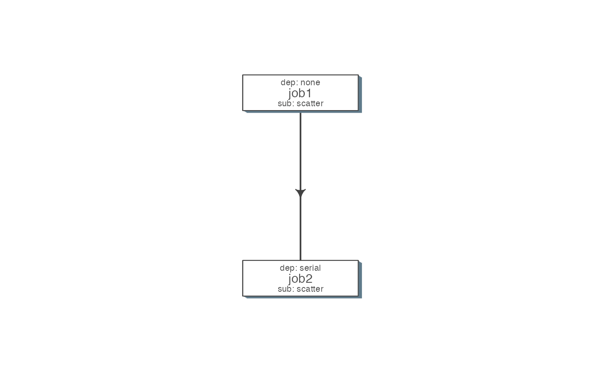
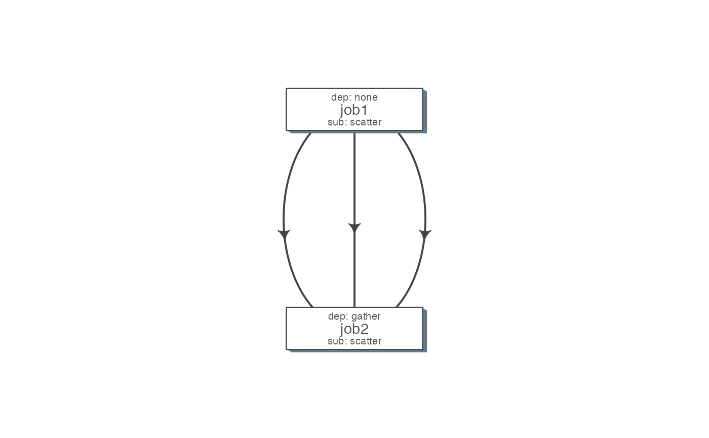
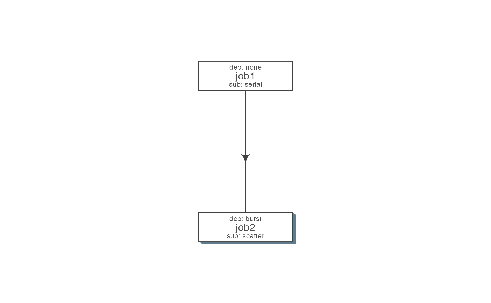

Plot a flowchart using a flow object or flowdef
plot_flow(x, ...) # S3 method for flow plot_flow(x, ...) # S3 method for list plot_flow(x, ...) # S3 method for character plot_flow(x, ...) # S3 method for flowdef plot_flow(x, detailed = TRUE, type = c("1", "2"), pdf = FALSE, pdffile, ...) # S3 method for flowdef plot(x, detailed = TRUE, type = c("1", "2"), pdf = FALSE, pdffile, ...) # S3 method for flow plot(x, ...)
| x | Object of class |
|---|---|
| ... | experimental and only for advanced use. |
| detailed | include submission and dependency types in the plot [TRUE] |
| type | 1 is original, and 2 is a ellipse with less details [1] |
create a pdf instead of plotting interactively [FALSE] |
|
| pdffile | output file name for the pdf file. [ |
qobj = queue(type="lsf") cmds = rep("sleep 5", 10) jobj1 <- job(q_obj=qobj, cmd = cmds, submission_type = "scatter", name = "job1") jobj2 <- job(q_obj=qobj, name = "job2", cmd = cmds, submission_type = "scatter", dependency_type = "serial", previous_job = "job1") fobj <- flow(jobs = list(jobj1, jobj2)) plot_flow(fobj)#>#>#>#>#>#>#>### Gather: many to one relationship jobj1 <- job(q_obj=qobj, cmd = cmds, submission_type = "scatter", name = "job1") jobj2 <- job(q_obj=qobj, name = "job2", cmd = cmds, submission_type = "scatter", dependency_type = "gather", previous_job = "job1") fobj <- flow(jobs = list(jobj1, jobj2)) plot_flow(fobj)#>#>#>#>#>#>#>### Burst: one to many relationship jobj1 <- job(q_obj=qobj, cmd = cmds, submission_type = "serial", name = "job1") jobj2 <- job(q_obj=qobj, name = "job2", cmd = cmds, submission_type = "scatter", dependency_type = "burst", previous_job = "job1") fobj <- flow(jobs = list(jobj1, jobj2)) plot_flow(fobj)#>#>#>#>#>#>#>